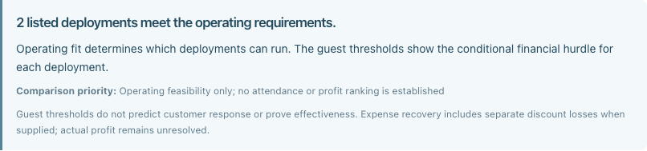
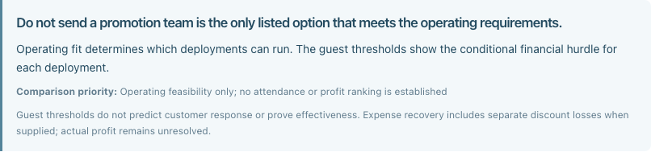
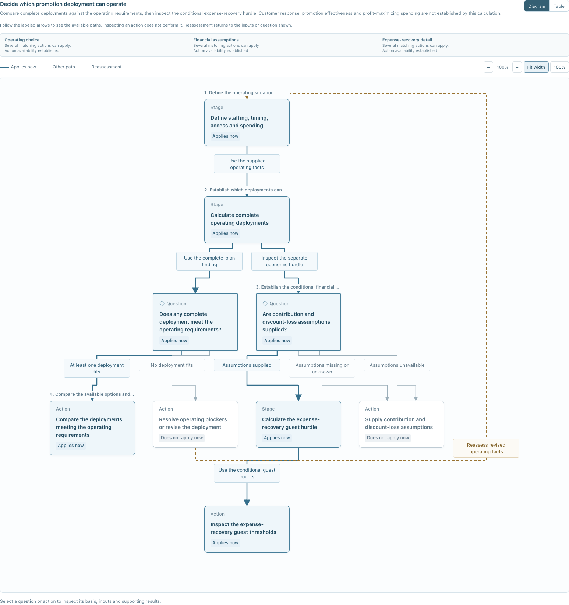
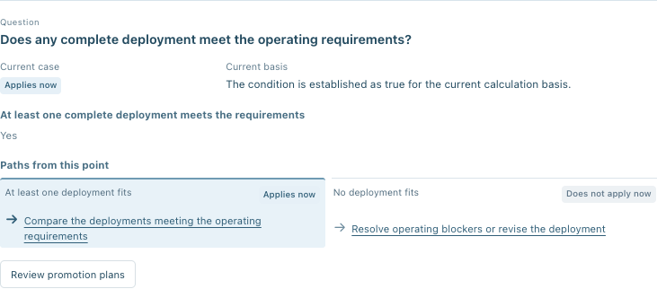
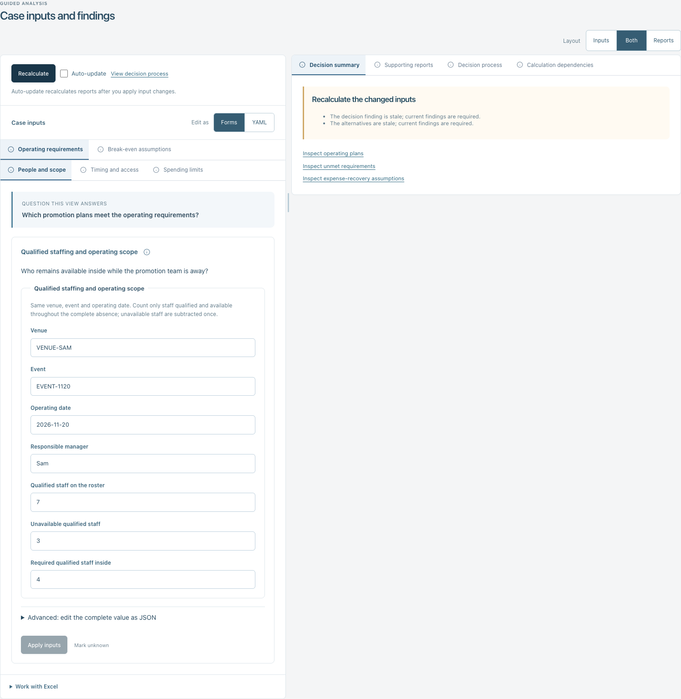
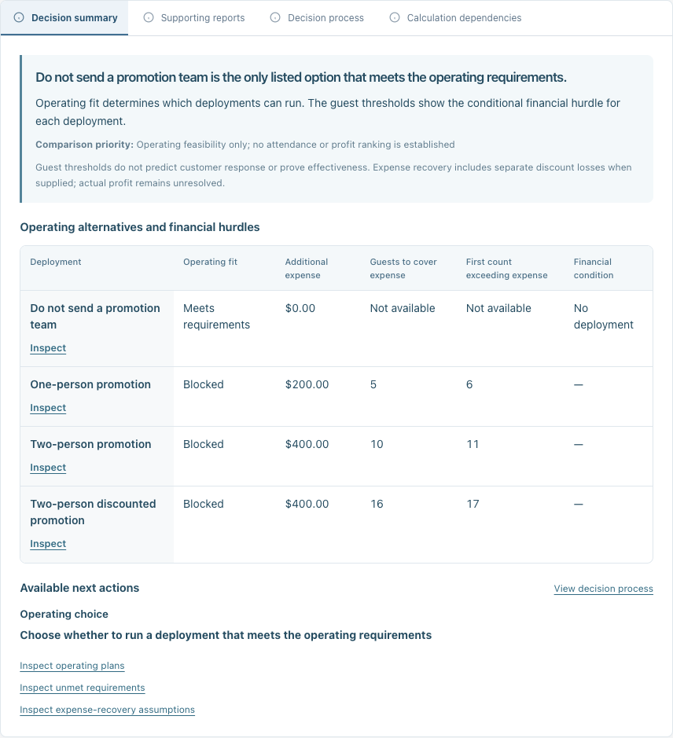
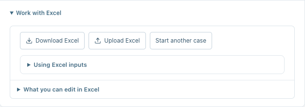

Alex has made the call. With five qualified staff available, the club can send one promoter and keep the required four people inside. He has chosen the $200 standard-offer deployment and recorded its specific authorization. Five genuinely additional guests would cover that expense under the reviewed assumptions; whether they will come remains unknown.
Before the team leaves, another employee calls out. A callout means a scheduled employee reports they cannot work. Now only four qualified staff are available. The floor lead knows about the absence. The promoter may still be working from Alex’s earlier “yes.”
If the assignment goes ahead unchanged, only three people remain inside. Alex risks sending a team on the strength of a decision whose supporting facts have already changed.
A call or shared message could stop the departure. The continuing problem is making sure everyone understands the current basis, and that the earlier authorization is not mistaken for a current decision. Decision Lab recalculates the complete assignments from the changed fact, so Alex can explain why the team must stay inside.
This continues Alex’s original deployment decision. An arrangement here is a complete assignment: people, location, timing, offer, transport and permissions that must work together.
Alex, the venue, records and decisions are fictional. The paired views show the current calculation before and after the third callout. No deployment or measured promotion return is established. Sources and scope.
In Marketplace, install or update Venue operations, then choose Start analysis for Plan a street-team deployment. The shared walkthrough shows the five-staff inputs used here.
The staffing change removes an option.
The assessment asks the same question before and after the callout: which supplied complete deployments meet the current operating requirements? Only available staffing changes in this comparison. The assignments, four-person floor minimum, timing, access and financial assumptions stay fixed.
The requirement stays the same: at least four qualified staff inside throughout the planned absence. With five available, holding and sending one promoter meet the operating requirements. With four available, everyone is needed inside. Only holding remains feasible.
Before: five available.
Hold or send one promoter. The one-person assignment leaves four inside.


After: four available.
Hold only. Sending one would leave three inside and fail the minimum.


The $200 assignment’s financial hurdle still reads five guests to cover its expense. The updated Decision summary puts that conditional threshold beside the assignment’s failed operating fit. The financial calculation and operating assessment establish different things; reaching a guest threshold cannot supply the missing floor coverage.
Put the changed fact in the right hands.
The floor lead confirms that the third absence applies to this venue, evening and planned absence. Alex changes the recorded staffing rather than relying on the earlier calculation.
In Both layout, open Forms → Operating requirements → People and scope. Change Unavailable qualified staff from 2 to 3, keeping the seven-person roster and four-person inside minimum. Choose Apply inputs. An unfinished edit remains a draft; applying it records the new calculation basis.
| Business responsibility | What they confirm | Why its scope matters |
|---|---|---|
| Floor lead | Qualified staffing, callouts and inside coverage. | The available count must cover this evening’s complete planned absence. |
| Event coordinator | Timing and recorded access permission. | Both must apply to the actual event and outreach window. |
| Finance owner | Contribution assumptions and separate discount losses. | The financial hurdle depends on the offer and relevant costs. |
| Alex | Spending delegation, operating result and deployment decision. | The assignment and its authorization must fit the current situation. |
Staffing, access and spending are smaller questions within Alex’s commitment decision. Structured thinking makes those dependencies explicit. One operating app checks these conditions together; the workflow supplies focused inputs, runs that calculation and presents its findings. The table describes the venue’s responsibilities, rather than approval steps in the interface.
View decision process, beside the calculation control, makes that structure visible as a graph. Labeled arrows separate “Does a deployment meet the operating requirements?” from “What response would cover its expense?” Highlighted paths apply to the recorded case; other paths remain visible, and dashed arrows return for reassessment. Alex can see where the staffing finding constrains the next response without treating the guest hurdle as a prediction.


Inspect a question behind the next response
Use Fit width for the overview, or zoom in to follow a branch. Select a question or action to inspect its current basis and linked results. Diagram / Table changes the representation of the same process. Inspecting an action does not release the crew or authorize spending.


The separate Calculation dependencies view explains how the answer is produced: one operating assessment checks the complete deployments, and derived arithmetic supplies the guest thresholds. The process shows possible responses; the dependencies show calculation relationships. Opening either view changes no staffing fact, calculation or authorization.
Apply the change, then recalculate.
After the staffing change is applied, the earlier operating result has an old basis. The Decision summary says Recalculate the changed inputs and withholds the earlier answer. Alex chooses Recalculate above the inputs to assess the current facts.


The new result says that only holding passes. The current inputs remain beside that answer; the five-guest financial threshold cannot supply the missing person.


An earlier “yes” cannot supply the missing staff.
Alex’s earlier $200 authorization was given when five staff were available. The new calculation establishes why that assignment no longer fits. The app does not record or cancel that management authorization. Alex must communicate the change to the floor lead and promoter through the venue’s actual operating process.
Earlier calculations remain in the exported case history, but a historical result is not the current answer. Inspecting a deployment also does not select it, authorize spending or release the team.
Alex keeps the team inside.
With only holding feasible under the recorded requirements, Alex stops the planned departure and tells the floor lead and promoter why. All four available staff are needed inside. He can explain to the owner that the $200 assignment fitted the five-staff situation, while the changed staffing removes that option.
The coordination problem now has a concrete resolution: the absence reaches the decision before the crew leaves, the operating calculation is current, and the people carrying out the assignment receive a changed instruction. Decision Lab calculates and explains the constraint; responsible people control dispatch.
This reuses the same assessment pattern with a changed basis. A complete deployment remains the candidate; its eligibility must be established against the current facts. The earlier finding describes the five-staff situation and cannot establish that the four-staff deployment works.
A contribution change poses a different question. Finance checks the assumption, Alex applies the revised value, and the financial target changes. That change informs his spending judgment even when staffing remains sufficient.
Optional: use Excel for the staffing change
Open the same calculation workflow through the shared setup instructions. Beneath the input panel, expand Work with Excel and choose Download Excel. In its staffing worksheet, change Unavailable qualified staff from 2 to 3, keeping the roster and inside minimum unchanged.
Choose Upload Excel, inspect Review workbook changes and confirm the intended edit before Apply inputs. Then choose Recalculate. This is another way to supply the same calculation inputs.
What you can edit in Excel identifies its supported worksheets. Other case facts remain intact. Excel starts collapsed; it is an alternative to the Forms change.


A separate test: what if the crowd leaves too late?
Timing can remove an option too. This is a separate controlled comparison with seven staff available, rather than another event in the five-staff story. Alex authorizes by 7:45 p.m.; the crew reaches the promotion point at 8, works until 8:45 and returns by 9. An 8:15 p.m. event exit is inside the outreach window. A planned 30-minute journey puts an accepting customer at the venue around 8:45, before the 9:15 p.m. latest useful arrival.
Change only the exit to 9 p.m. It falls outside the planned outreach window, and the same journey reaches the club at 9:30. The outreach arrangements fail the declared timing conditions even though staffing and expense fit. Holding remains available.


Alex needs another supported location or schedule, a revised objective, or no further push. Extending the crew’s hours changes the assignment, coverage and possibly cost; those inputs need another calculation and an operating decision.
Reaching the crowd during outreach still does not establish that anyone will accept the offer or arrive. A Better Plan Can Leave Us Just as Uncertain explains why a workable plan can leave the business outcome unresolved.
Alex can now distinguish a supported assignment from one whose premises have changed. The next article turns to the unresolved question: before the next $200, what does he need to learn?